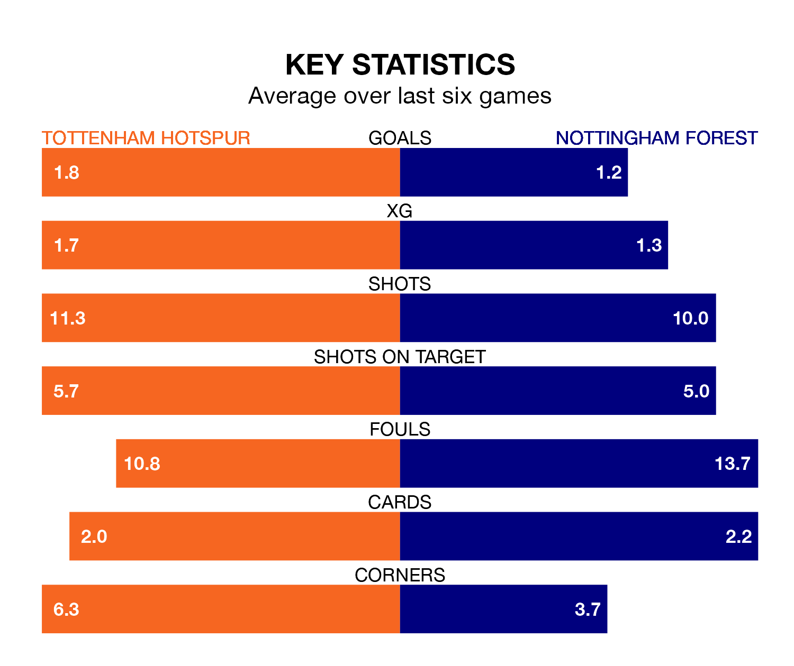

Tottenham Hotspur are heavy favourites to keep all three points at home in Sunday's late kick-off against Nottingham Forest.
Spurs, who sit fifth in the Premier League with 30 games played, are priced at 1.4 to seal victory at the Tottenham Hotspur Stadium.
Sitting 11 places and 28 points behind them in the table, Forest are 8.0 to win with *Betting Company*, while the draw is at 5.5.
With 62 goals in 30 games so far this season, Spurs are scoring more than average in the league with 2.1 goals per game. And they are conceding fewer than average, letting in 44 goals at a rate of 1.5 per game.
Forest, meanwhile, are below average scorers, with 1.3 goals per game, compared to a league average of 1.6. They have conceded 1.7 goals per game.
Tottenham are in mixed form in the Premier League, with three wins and a draw from their last six games.
With a win and two draws over that period, the Tricky Trees's form is worse – they have taken five points from 18, compared to the hosts' 10.
In Heung-Min Son, Spurs have one of the league's sharpest shooters so far this season. He has notched 15 goals in 27 appearances, to sit fifth in the scoring charts.
His goal rate of one every 151 minutes is slightly quicker than that of Chris Wood, the away side's top scorer with a goal every 110 minutes, and a total of 11 goals in 24 games.
In the last five years, Spurs and Forest have played each other on four occasions. Spurs won three of them and Forest one.
On average, Spurs scored 1.8 goals and the Tricky Trees 0.8 in those matches.
Their last meeting was on December 15, when Spurs won 2-0 away.
Spurs's last match was on Tuesday, a 1-1 draw against West Ham United, with Brennan Johnson getting the goal for Spurs.
Forest beat Fulham 3-1 last time out, also on Tuesday, with Callum Hudson-Odoi, Morgan Gibbs-White and Wood on the scoresheet.
Sunday's match will be refereed by Simon Hooper, who has taken charge of 19 Premier League games so far this season, issuing three red cards and booking 90 players. He has awarded two penalties.
The last Spurs game Hooper refereed was a 3-1 home win against AFC Bournemouth on December 31. His last Forest match was their 2-1 loss at home against Arsenal on January 30.
Updated: 16:41 (UTC), 04/04/24